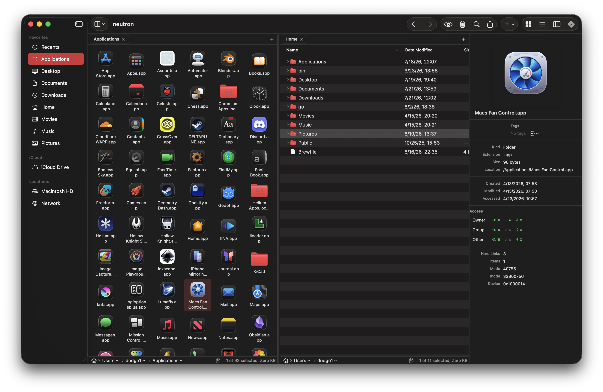

a file manager
that actually works.
dual panes, cloud drives, git, downloads, command palette. all native swift, all free, all open source.

one app, all the tools.
everything you need to move, manage, and build — without leaving your file manager.
organize
- dual panes with independent tabs
- command palette for instant access
- path bar with terminal integration
- preview pane with metadata
- unified search across local + cloud
connect
- cloud drives — s3, backblaze, gdrive, dropbox
- sftp, ftp, webdav, smb
- video downloads via yt-dlp
- built-in torrent engine
- download manager with queue + resume
create
- git panel — stage, commit, push, pull
- branch switching with ahead/behind
- git log and history viewer
- media conversion via ffmpeg
- context menus on every action
make it yours.
neutron adapts to you. remap every shortcut, rearrange the sidebar, toggle panels on or off. the shortcut recorder is built right into settings.
cloud drives and downloads, built in.
browse remote storage, grab videos, torrent files. no extra apps, no subscriptions.
cloud drives
s3, backblaze, google drive, dropbox, onedrive, and more. one sidebar, one search.
video downloads
paste a link, grab a video. yt-dlp and ffmpeg under the hood.
torrents
built-in bitTorrent engine. no separate client needed.
download manager
queue, prioritize, pause, resume. segmented downloads with retry.
open as many panes
as you want.
every pane has its own set of tabs. split your workspace into as many sections as you need, each with multiple tabs inside. drag tabs between panes to rearrange everything.
finder but better.
neutron is free, open source and fast. install it, and let your files get to work.